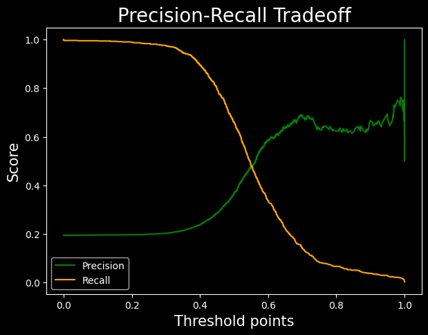
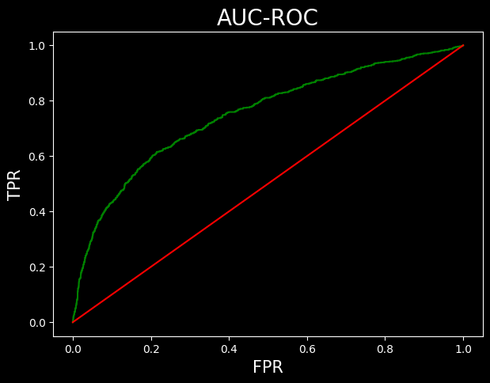
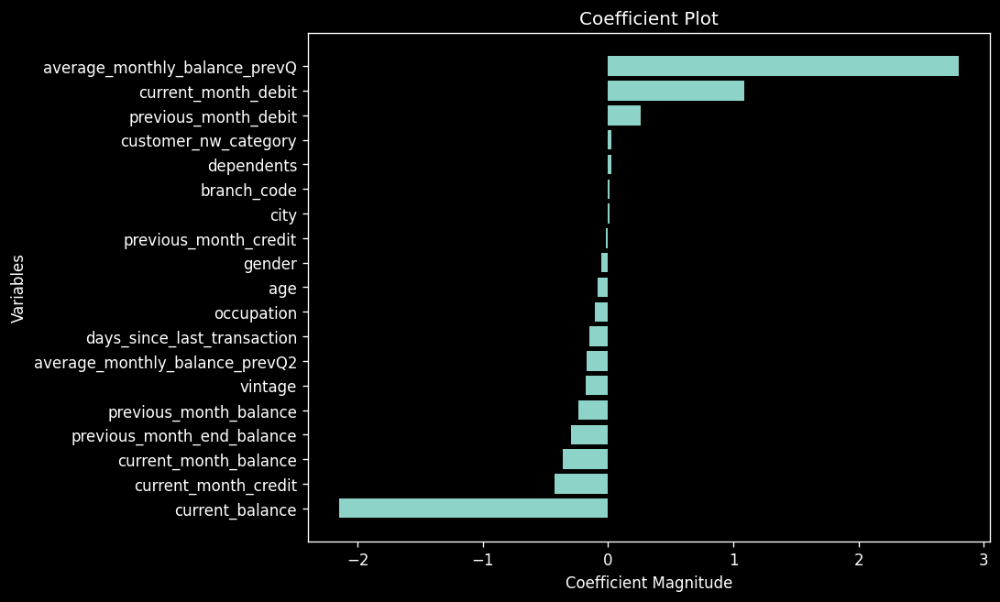

Introduction
Logistic regression is a classification algorithm used in classification problems where the target variable is categorical.
A categorical variable is one which represents a characteristic that cannot be measured or counted. Linear regression, however, is not suitable for classification problems due to two main reasons:
- Sensitivity to Outliers: Linear regression is sensitive to outliers. In classification problems, the presence of an outlier can affect the linear model drastically, even if it should not influence the predictive model.
- Interpretation Issues: In classification problems, predictions are often classified. However, linear regression predictions do not have such limiting values, leading to predictions that can sometimes be meaningless.
Consider a classification problem where we need to calculate the probability of a data point belonging to a specific class. The probability or prediction should always be between 0 and 1. However, linear regression can predict values outside this range, which is not useful for classification problems.
To solve this, we use the logit function, which maps values between 0 and 1. The logistic regression line can be derived as:
y = mx + c
To restrict values between 0 and 1, we use the logistic function. Logistic regression is considered a regression model because it predicts continuous probability values between 0 and 1.
Logit Function or Sigmoid Function
A function which has a range between 0 and 1 (0 and 1 exclusive). Irrespective of any input, it will always give output between 0 and 1.
Mathematically, range ∈ (0,1)
This function is given as: \( g(x) = \frac{1}{1 + e^{-x}} \)
If we apply this function in the linear regression line: \( z = mx + c \), we can get the prediction values as: \( Y_p = g(z) = \frac{1}{1 + e^{-(mx + c)}} \)
The term "logistic" comes from the logit function used in this process.
Logistic regression in Scikit-learn automatically converts the probabilities into classes using a threshold of 0.50, where values greater than or equal to 0.50 are classified as 1, and values less than 0.50 are classified as 0.
When using logistic regression, we typically use gradient descent to optimize the model. However, the cost function for logistic regression is more complex than that for linear regression because it includes an exponential term, resulting in a non-convex cost plot. Gradient descent, which works only with convex plots, may not be effective with such non-convex plots.
Instead of using the simple cost function in linear regression, logistic regression uses the log loss function, defined as:
$$ J = -\frac{1}{n} \sum_{i=1}^{n} \left[ Y_i \log(Y_p) + (1 - Y_i) \log(1 - Y_p) \right] $$
Where:
- Yₚ is the predicted probability for class 1.
- Yᵢ is the actual class.
- n is the number of observations.
The method used by logistic regression to fit the best data model is called Maximum Likelihood Estimation (MLE).
Evaluation Metrics
Confusion Matrix
Confusion Matrix
• It is used to interpret the model predictions systematically.
• It is a simple NxN matrix, where N is the number of distinct classes in the target
variable.
• Most of the problems have two classes, often called binary classes: the classes are
referred as class 0 (negative class) and class 1 (positive class).
• If the outcome is + or – and the actual value is also + or – then we mark it as TRUE.
• If the outcome does not match with the actual value, we mark it as FALSE.
• This is the basic platform of representation for most of the classification metrics.
Accuracy
Accuracy Formula:
Accuracy = \(\dfrac{\text{Correct Predictions}}{\text{Total Predictions}}\) =
\(\dfrac{\text{TP} + \text{TN}}{\text{FP} + \text{FN} + \text{TP} +
\text{TN}}\)
• Higher accuracy indicates a better model. This is true when the data is balanced.
• Imbalanced Data: It refers to a dataset with disproportionate numbers of either
positive or negative classes, where both classes are not equally or nearly equally
distributed.
• Using accuracy as an evaluation metric on unbalanced data does not provide reliable
results.
Precision
Precision Formula:
Precision = \(\dfrac{\text{TP}}{\text{FP} + \text{TP}}\)
• Precision is helpful in the case of imbalanced data.
• Precision is used when avoiding false positives is more essential than encountering false
negatives.
Recall
Recall Formula:
Recall = \(\dfrac{\text{TP}}{\text{FN} + \text{TP}}\)
• Recall is used when avoiding false negatives is prioritized over encountering false
positives.
• Precision and recall have a relationship as shown in a graph: as one increases, a drop in
the other is observed. However, this is a weak relation.
• In case you are unsure about which metric to use, another metric called the F1-score is
used, which is the harmonic mean of precision and recall.
F1 = \(\dfrac{2}{\dfrac{1}{\text{Precision}} + \dfrac{1}{\text{Recall}}}\)
The F1-score is maximized when Precision = Recall.
Log Loss Model
Log Loss (Logarithmic Loss) Explanation:
• The log loss function calculates the error of a classification model.
• A smaller value of log loss indicates a better performing model.
• The farther a predicted probability is from its true class, the higher the log
loss.
As shown in the figure on the left, although the metrics of both models (C1 and C2) are the
same, the log loss of C1 is greater than C2. Therefore, Model C2 is a better model based on
log loss.
Log Loss Formula:
\( \text{Log Loss} = -\frac{1}{n} \sum_{i=1}^{n} \left[ y_i \log(p_i) + (1 - y_i) \log(1 -
p_i) \right] \)
Where:
- \( n \) = Number of observations
- \( y_i \) = Actual class (0 or 1)
- \( p_i \) = Predicted probability for class 1
AUC ROC Curve
AUC-ROC Explanation:
• AUC-ROC is a performance measurement for classification models across different threshold
values.
• AUC stands for Area Under the Curve, and it is used to evaluate the model's ability
to distinguish between the positive class (1s) and the negative class (0s).
• A higher AUC value indicates a better model in predicting 0s as 0s and 1s as 1s, i.e.,
better at distinguishing between classes.
• However, AUC works best when datasets are nearly balanced.
The AUC-ROC curve is created by calculating the values of:
- FPR (False Positive Rate): The proportion of negative instances incorrectly
classified as positive.
\( \text{FPR} = \frac{\text{FP}}{\text{TN} + \text{FP}} \)
- TPR (True Positive Rate): The proportion of positive instances correctly
classified.
\( \text{TPR} = \frac{\text{TP}}{\text{TP} + \text{FN}} \)
Both FPR and TPR range from 0 to 1.
The graph of AUC-ROC is plotted with FPR on the x-axis and TPR on the y-axis for various
threshold values.
The area under the graph is considered to be 1 squared unit.
• AUC values greater than 0.95 may indicate that there could be some error in the model, as
the model is performing too well (potential overfitting).
Implementation
Data Dictionary
A data dictionary is a centralized repository of information about data, including meaning, relationships to other data, origin, usage, and format.
Sample Dataset
The dataset contains bank customer details and includes the following types of data:
- Demographic Information: Customer ID, vintage, age, etc.
- Customer Bank Relationship: Customer’s net worth, branch code, and days since the last transaction.
- Transactional Information: Current balance, previous month-end balance, churn, etc.
Objective
Our objective is to predict whether the churn average balance of a customer falls below the minimum balance in the next quarter.
Class-wise Data Distribution
- The target variable follows an approximately 80-20 distribution.
- This indicates that the data is imbalanced.
data['churn'].value_counts()/len(data)0 0.806317
1 0.193683
Name: churn, dtype: float64
Handling Imbalanced Data
- Since the data distribution is in an 8:2 ratio, weights are assigned as 2:8 to balance the model.
- In the code block, the
class_weightis set tobalancedto adjust for this imbalance.
Effect on Logistic Regression Model
- Since class 1 has fewer instances, the Logistic Regression model tends to focus more on classifying class 0, as most errors come from class 0.
- Setting
class_weight='balanced'applies a multiplier to class 1 errors, meaning errors in class 1 contribute more to model training. - This approach is useful in cases of imbalanced data to prevent the model from being biased toward the majority class.
Prediction in Logistic Regression
- Logistic Regression provides two types of predictions:
- Value Prediction: Direct classification of instances into class 0 or class 1.
- Probability Prediction: The model outputs a 2D list where:
- The first column contains probabilities for class 0.
- The second column contains probabilities for class 1.
from sklearn.linear_model import LogisticRegression as LR
classifier = LR(class_weight='balanced')classifier.fit(x_train, y_train)
predicted_values = classifier.predict(x_test) #predicting class
predicted_probabilities = classifier.predict_proba(x_test) #predicting probabilitiespredicted_valuesarray([1, 0, 0, ..., 0, 0, 0], dtype=int64)/pre>
predicted_probabilities, predicted_probabilities.shape(array([[1.57352866e-01, 8.42647134e-01],
[5.32054801e-01, 4.67945199e-01],
[5.88884137e-01, 4.11115863e-01],
...,
[8.85768467e-01, 1.14231533e-01],
[9.99947393e-01, 5.26073255e-05],
[5.12731898e-01, 4.87268102e-01]]),
(4414, 2))
Model Performance Analysis
- The model has an accuracy of 72%. While this is fairly good, we must evaluate precision and recall due to data imbalance.
#accuracy metric
classifier.score(x_test, y_test)#0.7134118713185319
Precision and Recall
- Precision: Around 38%, meaning 38% of the positive predictions are false positives.
- Recall: Around 66%, meaning only 66% of actual positive cases are correctly predicted.
#claculating the precision score
from sklearn.metrics import precision_score
precision = precision_score(y_test, predicted_values)
precision0.36671001300390116
#calculating recall score
from sklearn.metrics import recall_score
recall = recall_score(y_test, predicted_values)
recall0.6596491228070176
Business Considerations
- If a bank offers gifts to prevent customer churn, recall is prioritized to reduce the risk of missing actual churn cases. False positives (non-churning customers getting gifts) are acceptable.
- If the gift offer is costly, precision is prioritized to avoid unnecessary spending, but this risks missing actual churners.
F1-Score Evaluation
- The F1-score is 0.47. Since F1-score < 0.5, the model is not performing well.
- To get a summary of all metrics in one place, we use the PRF Summary.
#f1 score from library
from sklearn.metrics import f1_score
f1 = f1_score(y_test, predicted_values)
f10.4713748432929378
Support Metric
- Support represents the number of instances for each class (class 0 and class 1) in the dataset.
- The function returns a list of two values for each metric: one for class 0 and one for class 1.
from sklearn.metrics import precision_recall_fscore_support as PRF_summary
precision, recall, f1, support = PRF_summary(y_test, predicted_values)
precision, recall, f1, support(array([0.8988178 , 0.36671001]),
array([0.72632762, 0.65964912]),
array([0.8034188 , 0.47137484]),
array([3559, 855], dtype=int64))
Classification Report
- Another function to obtain performance metrics is Sklearn’s classification report.
- This function provides a well-formatted summary of precision, recall, and F1-score.
- Drawback: The values cannot be directly used as they are for representation purposes only.
from sklearn.metrics import classification_report
k = classification_report(y_test, predicted_values)
print(k)| precision | recall | f1-score | support | |
| 0 | 0.90 | 0.73 | 0.80 | 3559 |
| 1 | 0.37 | 0.66 | 0.47 | 855 |
| accuracy | 0.71 | 4414 | ||
| macro avg | 0.64 | 0.70 | 0.64 | 4414 |
| weighted avg | 0.80 | 0.71 | 0.74 | 4414 |
Precision-Recall Curve
- Sklearn’s
precision_recall_curvefunction returns three values: precision points, recall points, and threshold points. - This function calculates precision and recall for every possible threshold between probabilities 0 and 1.
- The threshold list has one element fewer than precision and recall, so we skip the last value.
- Using these data points, we can plot a precision-recall trade-off graph.
- The optimal threshold, where precision and recall balance best, is around 0.55.
from sklearn.metrics import precision_recall_curve
precision_points, recall_points, threshold_points = precision_recall_curve(y_test, predicted_probabilities[:,1])
precision_points.shape, recall_points.shape, threshold_points.shape((4414,), (4414,), (4413,))
plt.figure(figsize=(7,5), dpi=100)
plt.plot(threshold_points, precision_points[:-1], color = 'green', label = 'Precision')
plt.plot(threshold_points, recall_points[:-1], color = 'orange', label = 'Recall')
plt.xlabel('Threshold points', fontsize = 15)
plt.ylabel('Score', fontsize=15)
plt.title('Precision-Recall Tradeoff', fontsize = 20)
plt.legend()
AUC ROC Curve
- The green line is the TPR vs FPR curve.
- The red line is ROC curve with AUC = 0.5. This is a simple plot of line y = x.
- The area under the curve is obtained by the ROC-AUC-SCORE.
- The result obtained is pretty average
from sklearn.metrics import roc_curve, roc_auc_score
fpr, tpr, threshold = roc_curve(y_test, predicted_probabilities[:,1])
#passing probabilities of class 1plt.figure(figsize=(7,5), dpi=100)
plt.plot(fpr, tpr, color = 'green')
plt.plot([0,1], [0,1], label = 'baseline', color = 'red')
plt.xlabel('FPR', fontsize = 15)
plt.ylabel('TPR', fontsize = 15)
plt.title('AUC-ROC', fontsize=20)
plt.show()
roc_auc_score(y_test, predicted_probabilities[:,1])Coefficent plot
"#arranging the data
c = classifier.coef_.reshape(-1)
x = X.columns
coeff_plot = pd.DataFrame({
'coefficients':c,
'variable':x
})
#sorting the values
coeff_plot = coeff_plot.sort_values(by='coefficients')
coeff_plot.head()
"
| Index | Coefficients | Variable |
|---|---|---|
| 9 | -2.151261 | current_balance |
| 13 | -0.426585 | current_month_credit |
| 17 | -0.365368 | current_month_balance |
| 10 | -0.295344 | previous_month_end_balance |
| 18 | -0.240270 | previous_month_balance |
"plt.figure(figsize = (8,6), dpi = 120)
plt.barh(coeff_plot['variable'], coeff_plot['coefficients'])
plt.xlabel('Coefficient Magnitude')
plt.ylabel('Variables')
plt.title('Coefficient Plot')
"
